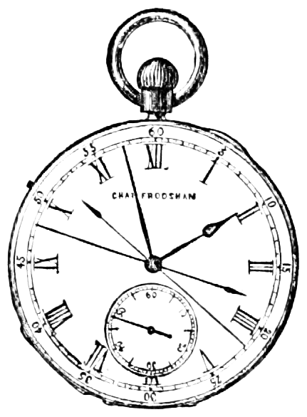

現代では「占い」の道具として知られるタロットカードですが、その起源はゲームにあります。神秘的なイメージとは裏腹に、タロットは数百年の時間をかけて徐々に占いの世界と結びついていきました。今回はタロットの誕生から現代のウェイト版に至るまでの歴史をたどってみましょう。
タロットの起源 ― 15世紀イタリアのカードゲーム
タロットカードの最古の記録は、15世紀前半の北イタリアにさかのぼります。現存する最古のタロットデッキのひとつ「ヴィスコンティ＝スフォルツァ版」は、1440年代にミラノの貴族ヴィスコンティ家のために制作されたとされています。当時のカードは手書きで金箔が施された豪華なもので、非常に高価な美術品でもありました。
この時代のタロットは「タロッキ（Tarocchi）」と呼ばれるカードゲームのために使われていました。現代のカードゲームのように数字札（小アルカナ）と切り札（大アルカナ）で構成されており、絵札は単なるゲームの駒にすぎませんでした。
占いへの転用 ― 18世紀フランスでの変容
タロットが占いに用いられるようになったのは、意外にも18世紀後半のことです。1781年、フランスの神秘主義者アントワーヌ・クール・ド・ジェブランが著書『原始の世界』の中で「タロットは古代エジプトの秘術書に由来する」という説を唱えました。
この説は現在では否定されていますが、当時のヨーロッパで大きな反響を呼びました。エジプト由来という神秘的な物語が人々の想像力をかき立て、タロットはオカルティズムや秘教思想と強く結びついていきます。
「タロットとエジプトの関連は歴史的には証明されていないが、この物語がタロットを「占いの道具」として定着させる大きな原動力となった。」
フランスではエッティラ（本名ジャン＝バティスト・アリエット）が、タロットを占い専用に再設計した最初の人物として知られています。彼は1789年に占い専用デッキを発表し、カードの配置法（スプレッド）を体系化しました。
黄金の夜明け団と秘教思想の融合
19世紀末のイギリスに設立された秘密結社「黄金の夜明け団（Hermetic Order of the Golden Dawn）」は、タロットの歴史において特に重要な位置を占めます。この団体はカバラ（ユダヤ神秘主義）・錬金術・占星術・数秘術といった西洋秘教の知識をタロットと体系的に結びつけました。
黄金の夜明け団の会員には、後にウェイト版タロットを制作するアーサー・エドワード・ウェイト、そして独自の「トート・タロット」を生み出すアレイスター・クロウリーも名を連ねています。この時代のオカルティストたちによる研究が、現代のタロット解釈の基礎を形成しました。
ウェイト版タロットの誕生 ― 1909年
1909年、アーサー・エドワード・ウェイトはイラストレーターのパメラ・コールマン・スミスとともに「ライダー・ウェイト・タロット」を発表しました。出版社のライダー社から発行されたことからこの名がつきました。
このデッキが革命的だったのは、小アルカナ（1〜10の数字札）のすべてに具体的な場面が描かれた点です。それまでの多くのデッキでは小アルカナは棒や剣を数並べただけの抽象的な図案でしたが、ウェイト版では人物が登場する絵物語として描かれました。
これにより、占いを学ぶ人が絵から直感的に意味を読み解けるようになり、タロットの普及が一気に加速します。現在もタロット入門書のほとんどがウェイト版を基準としており、世界で最も広く使われているデッキです。
20世紀以降 ― 大衆文化への浸透

20世紀に入ると、タロットは特定の秘密結社のものではなく、一般大衆が楽しむ占い文化として広く普及していきます。1960〜70年代のニューエイジムーブメントはタロットの人気をさらに押し上げ、世界中で多様なデッキが生まれました。
現在では数百種類以上のタロットデッキが存在し、ファンタジー・アニメ・ポップアートなど様々なテーマのデッキが制作されています。デジタル時代を迎えた今日では、スマートフォンアプリやAIを活用したオンライン占いも登場し、タロットはさらに身近な存在となっています。
📚 この記事を読んで、もっと深く知りたい方へ

まとめ
タロットカードは、15世紀のゲーム用カードとして生まれ、18世紀のオカルティズムとの出会いを経て、19世紀末の神秘主義者たちによって体系化され、1909年のウェイト版で現代の形が完成しました。約600年にわたる歴史の中で、タロットは常に時代の知的・精神的潮流とともに変化し続けてきたのです。
このサイトで使用しているウェイト版タロットのカードを実際に引いてみることで、長い歴史をもつ象徴の世界をぜひ体験してみてください。